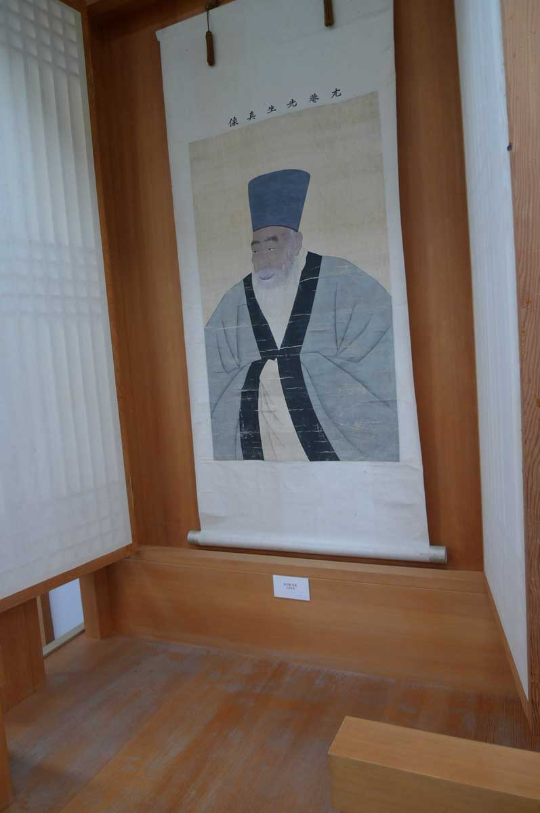
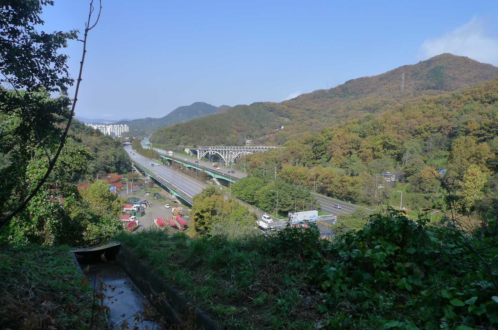
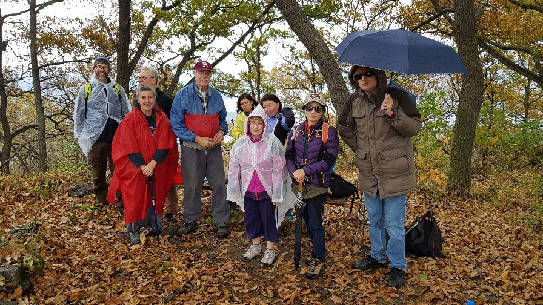

UamSaJeok Historic Park (우암사적공원)

This hike began at the UamSaJeok Historic Park (우암사적공원) located at 65 GaYang-dong, Dong-gu (가양동, 동구) on the eastern part of
Daejeon a short distance from the main bus terminal so very easy to get to. It is worth your time to visit this historic
park and look at the displays of cultural assets inside the exhibition hall before exploring the numerous hiking trails in
the surrounding hills. This park is a classic example of a Joseon (조선) Confucian School complex and monument to one of the
great Confucian scholars of the middle Joseon ( 조선) Period, patriotic (Uam) Song Si Yeol (우암 송시열) who lived from 1607 -
1689. Uam or 우암 was his pen name he used in his writings. From this place in the foothills of GaYang dong, he studied,
taught his students and worked on his plans to conquer the north. He became minister of general management under the reign
of King Injo (인조).
Old bridge

The trail behind the park leads up into the hills behind the school property and crosses over the tunnel that leads to
OkCheon (옥천). Part of the trail follows along a fence line. On this hike we ended up at the location of the old bridge build
during the former president ParkChunHee (박전희) period and is typical of the bridges of reinforced concrete that were built
during this period. It has since been abandoned for the more easily maintained bridge of steel and concrete. It is a very
difficult type of bridge to classify for weight loads. I know this because I encountered them in Vietnam. For this reason
another steel construction bridge was built parallel to it, and a new tunnel was constructed and the reinforced concrete
bridge and tunnel were abandoned.
Hiking trails

It is not a difficult or heavily used hiking trail and there are many fine views along the way. It is part of a large ring
of trails that encircle the city of Daejeon and you could easily continue on the trails to some of the other more visited
mountains. At the end of the hike one can either follow the trail back to the beginning or find a path way down the mountain
and take a bus that leads to the start of the hike. I recommend this hike for a short fall hike and an opportunity to see
the city of Daejeon from a different prospective. In the fall the leaves are proudly displaying their various colors as was
in the case when we hiked in November 2018 but in the spring the historical park below is alive with blooms. It is
interesting that for a portion of the hike, you are passing over the tunnel build in the 1970s that greatly shortened the
time to reach the city of Okcheon (옥천). On these trails you are never far from the bustle of the city and the sound of cars
not far below but the city citizens appreciate the closeness of nature for morning or evening walks.